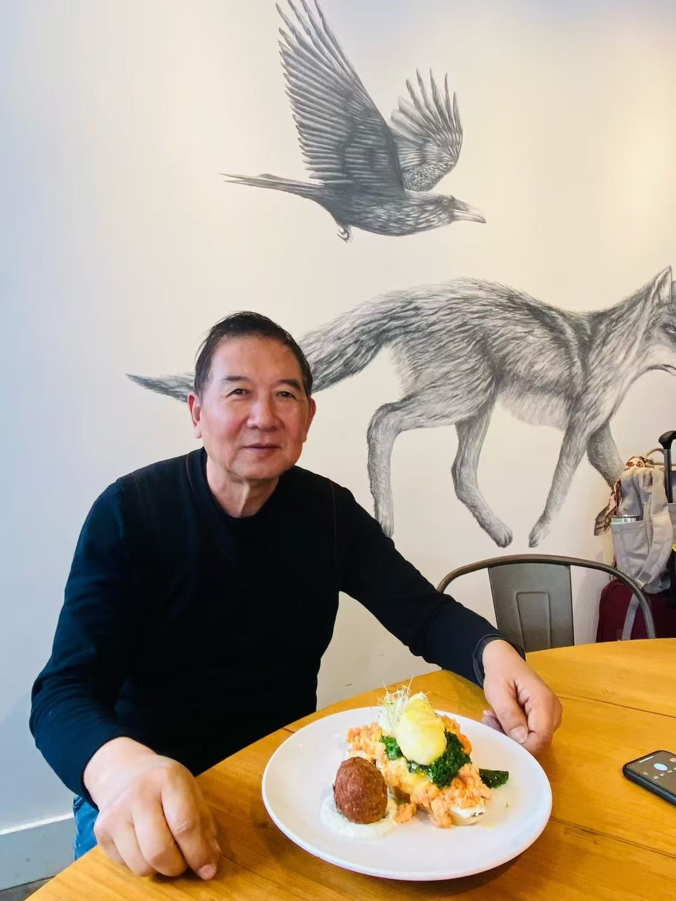
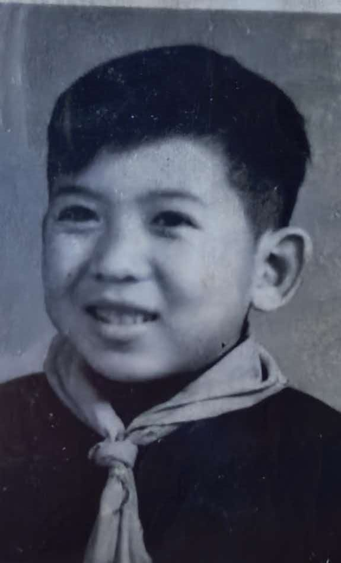

素莲想对您说
素莲
01 / 05纪念爷爷离开我们的第一百天

1951.06.26 — 2026.07.13
1951年6月26日
2026年7月13日 上午10:27
宁波

每一张照片，都是我们共同珍藏的时光。
那些珍贵的声音与画面，我们会一直记得。
点击打开
素莲
01 / 05维岁月匆匆，时序轮转，不觉吾夫辞尘，已历百日。秋风瑟瑟，草木含悲，百日哀思，萦绕寸心，日夜未歇。今吾携家人，备薄馔、奉清香，跪于灵前，泣书此文，以寄无尽哀思，悼我挚爱夫君。
忆昔往日，与君结发，相守数十载。人间烟火，岁岁年年，皆因君在，万般温暖。君性温良，敦厚正直，待人赤诚，处事担当。半生夫妻，你体贴温柔，知我冷暖、僅我悲欢，万般包容呵护，岁岁温柔相伴，予我安稳余生。此生相伴，无惊天动地之事，却懂细水长流之暖，朝暮相守，柴米温情，岁岁安然，便是此生最好的缘分。
曾以为，岁岁年年，我们可白首偕老，共看朝夕落日，共渡人间余生，安享晚年，陪伴子孙成长。奈何天道无常，世事难料，君竟骤然别离，弃我而去，呜呼。
百日光阴，弹指而过，却于我而言，日日皆苦，夜夜难眠。昔日并肩同行之人，如今阴阳两隔，不思量，自难忘，惟有泪千行。空留满屋回忆，只剩满目凄凉。庭院依旧，人事已非，触目皆是你的痕迹，抬眼再无你的身影。晨起无人问冷暖，夜深无人共话家常，万般孤寂，浸透骨髓，千般思念，无处安放，呜呼。
百日追思，寸寸断肠。我常独坐追忆，念你音容笑貌，历历在目；思你殷殷叮嘱，声声犹在耳畔。世间最痛，莫过于生离死别，莫过于挚爱永隔。往后山河依旧，春秋往复，岁岁年年，再无君伴。余生漫漫，唯余相思与热泪，岁岁祭奠，日日念想，呜呼。
夫君勿念，儿女皆已长大成人、成家立业，各自安稳顺遂、安居乐业，无需你挂怀。唯家中幼辈子孙，尚且年幼，我会悉心照拂，静静守候，盼其平安康健、长大成人，圆满你我心中期许。家中诸事，我定一一担起，守好家业，护好子孙，守好我们一世相守的家，不让你九泉忧心。
愿君此去，黄泉路稳，九泉安宁。无世间奔波劳碌之苦，无凡尘风雨牵绊。愿君魂归安乐，岁岁安然，清风明月常伴，四时岁月无忧，长眠无碍。
此生夫妻缘分已尽，但相思不绝，惦念不止。生生世世，不负相逢，不负相守。惟愿来生有缘，再结连理，岁岁相伴，永不分离。
百日泣祭，哀思无尽，纸短情长，字字皆泪。夫君安息，万般珍重！
哀哉尚飨！
妻 泣奠
二零二六年十月二十日
陈敏
02 / 05里拉
03 / 05推推
05 / 05恬恬
04 / 05